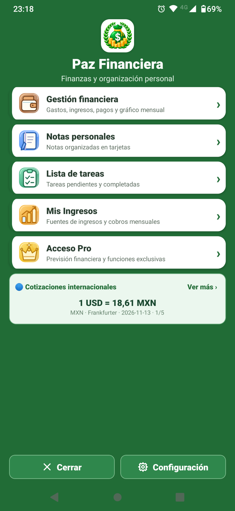
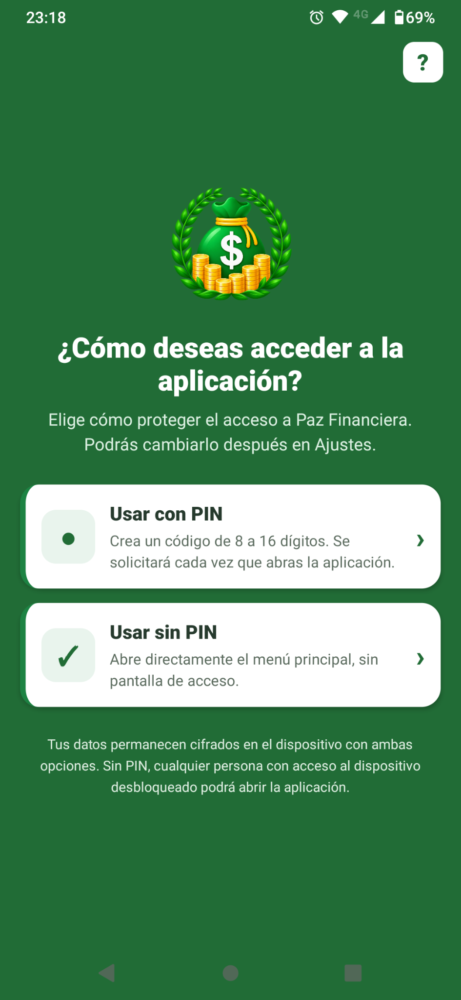

Gestión financiera
Controla gastos, salario, ingresos extra, pagos pendientes, cuotas y suscripciones.
Paz Financiera · Finanzas y organización personal
Paz Financiera, antes conocida como MyMoney, MeuDinheiro y MiDinero, reúne finanzas personales, tareas, notas y recordatorios en una sola aplicación Android.
Paz Financiera es una app Android para controlar gastos, gestionar ingresos, recordar pagos, organizar tareas y guardar notas personales.
Finanzas y organización personal
Controla gastos, salario, ingresos extra, pagos pendientes, cuotas y suscripciones.
Crea tareas, recordatorios y notas personales en texto o voz.
Consulta gráficos, calendario financiero e indicadores útiles.
Usa PIN de 8 a 16 dígitos y almacenamiento local cifrado.
Estas capturas reales ayudan a mostrar la interfaz en español con un estilo visual limpio y directo.


Mira el video oficial en español o abre la playlist completa con todos los idiomas disponibles.
Las funciones principales de finanzas, tareas y notas funcionan de forma local. Algunos servicios externos requieren conexión.
Sí. La aplicación fue renombrada y mantiene el mismo paquete Android: com.anspro.mymoney.app.
En el pie de página encontrarás el enlace a la versión completa en español.
Paz Financiera es una app Android para finanzas personales y organización diaria. Paquete: com.anspro.mymoney.app · Contacto: moneyproapp@gmail.com
Paz Financiera está disponible en portugués, inglés, español, francés, alemán, italiano e indonesio.